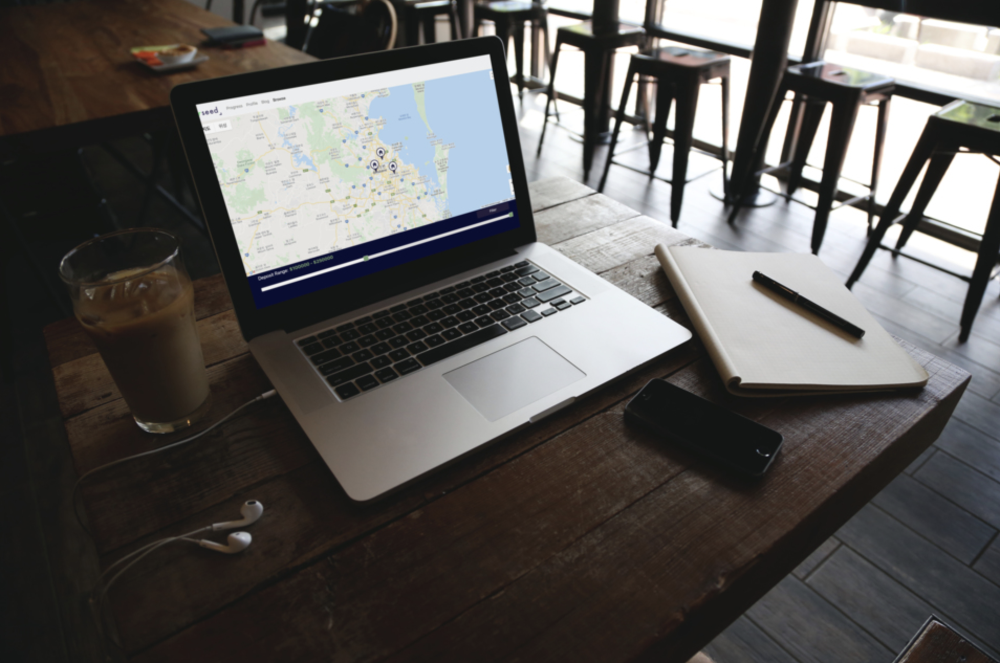
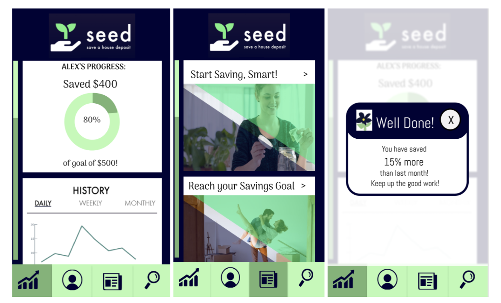
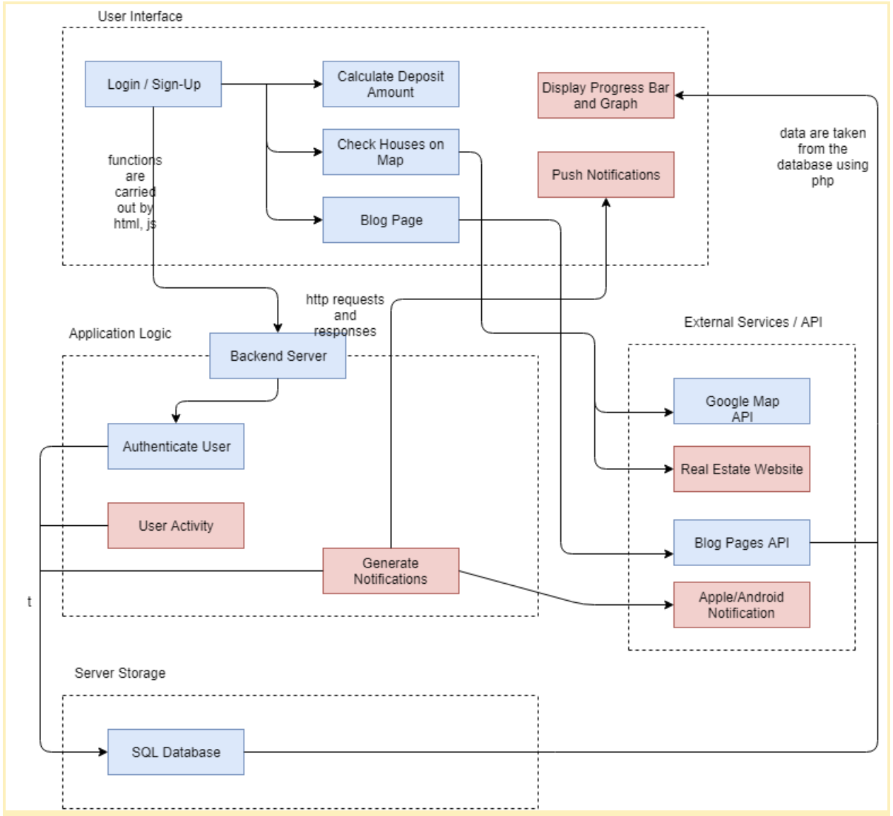
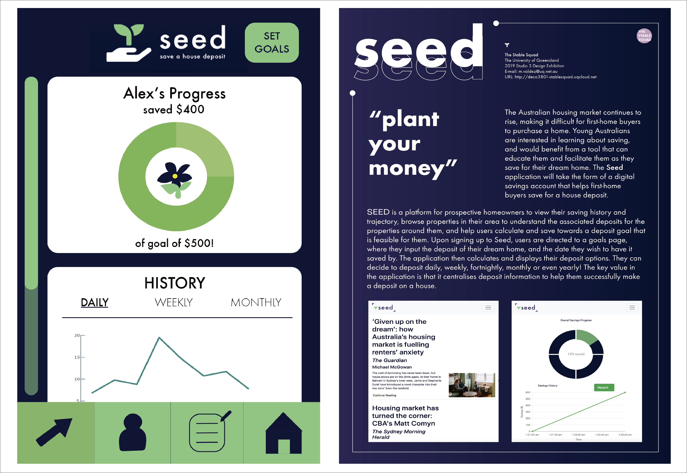
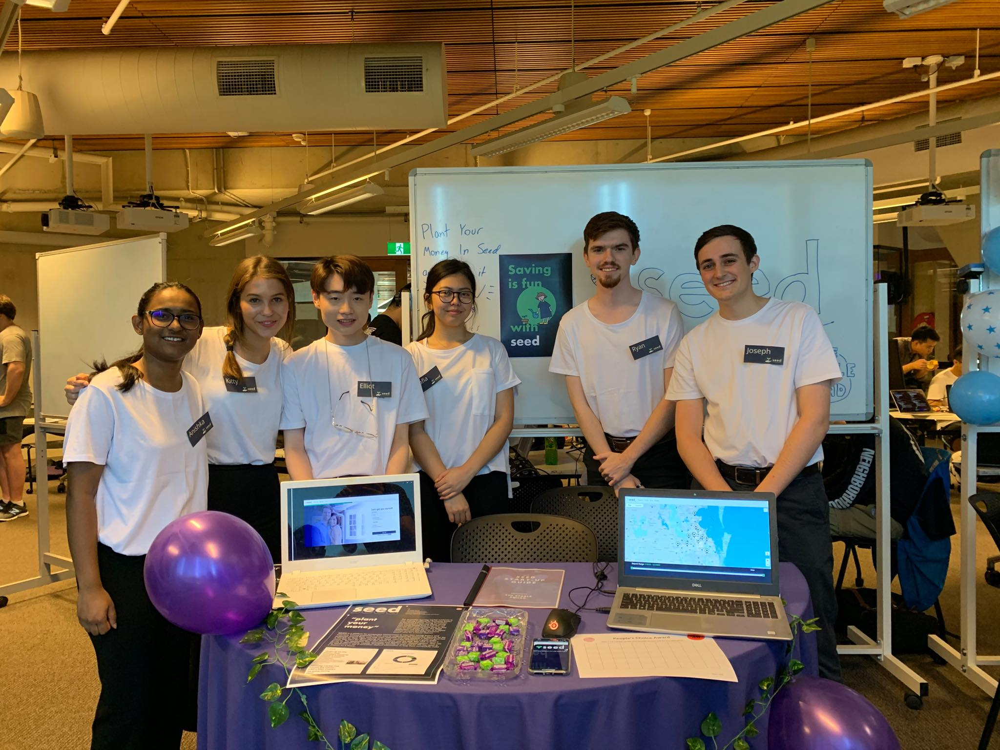

Seed
House Deposit Mobile App

Context
Delievered as part of the Design Computing Studio course at UQ, the project required us to develop a thoughtful design solution for the injustry clients/mentors. Our client was a director at 3CS Software and he requested the team to build a mobile app to help aspiring new home buyers save for a house deposit faster.
Description
The Australian housing market continues to rise, making it difficult for first-home buyers to purchase a home. Young Australians are interested in learning about saving, and would benefit from a tool that can educate them and facilitate them as they save for their dream home. The Seed application will take the form of a digital savings account that helps first-home buyers save for a house deposit. The application will not only help prospective homeowners incrementally save for a deposit, but it will also educate and provide users with information on house deposits through a blog page.


Seed is an engaging web application which aims to help and educate prospective Australian homeowners to save for a house deposit. The application allows users to set up a deposit frequency, to incrementally save for their first home. Therefore, it is crucial users frequently return to the application, thus Seed has a blog page, where links to educational articles are displayed. This allows first-home buyers learn about saving habits and educate them on the Australian housing market. Other key features include tracking deposit progress and viewing prospective properties.
Process




We believe that any redesign or new design would go smoother and faster if you have enough feedback from users and all UX UI assumptions made by the Stable Squad are verified with users.
Usability testing is an absolute key.
We’d like to thank and appreciate all the stakeholders and students for their support, feedback throughout the whole prototyping process.

Evaluation
Throughout this semester design assessment was an iterative process where the interface was consistently improved to best suit the current goals for the application. Initially the project proposal that we received outlined some relevant design aspects for the project where fonts, colours and a logo were all specified by the client 3CS for the branding of Seed. While these aspects were not concrete, the team believed that the project should follow these specifications to maintain a consistent design style for the application. The main goal for the design aspect of the project was to have a consistent style present on all pages of the application while being also functional for reading and navigating. To evaluate these design goals, we will go through each major deliverable for the project and evaluate whether the submission design is consistent with the Seed theme according to the established UX Goals earlier in this project.
View Web prototype
View the final project report